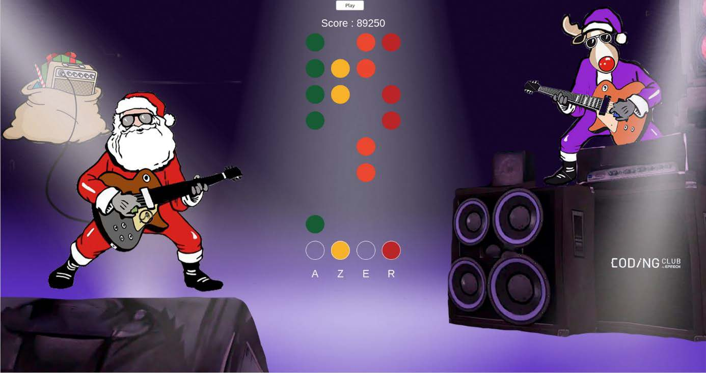
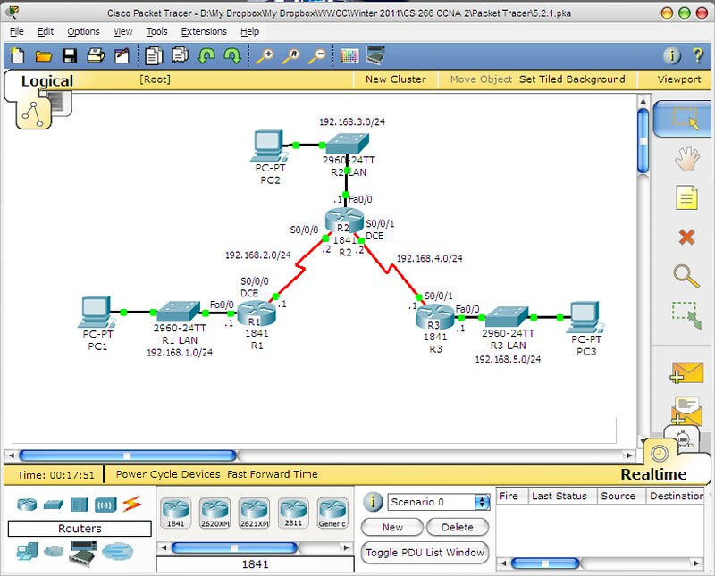
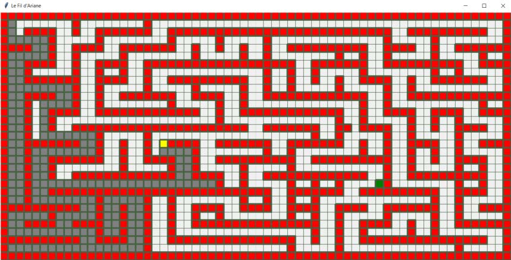
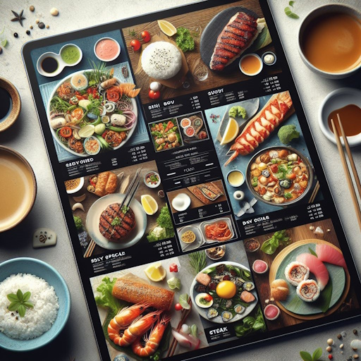
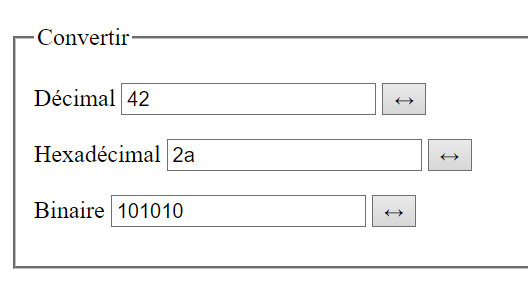
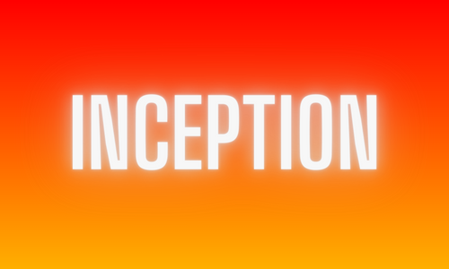
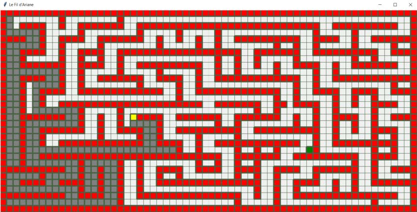
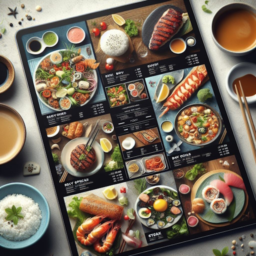
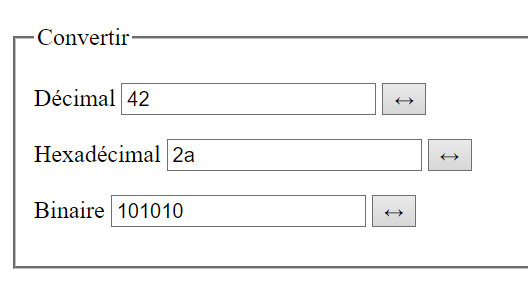
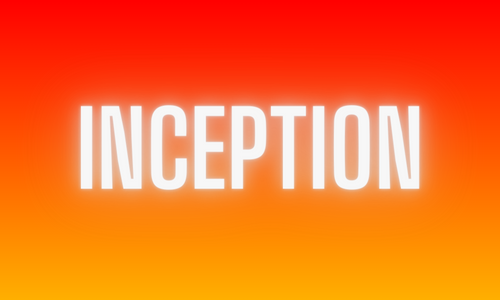

-


 







Santa Rock
Bob, un jeune garçon passionné de la guitare électrique, a envie de devenir une star du Rock’n’
Roll afin de pouvoir jouer sur toutes les grandes scènes du monde entier pour Noel. Il veut redonner
vie au Rock’n’ Roll et suivre les pas de son guitariste préféré Rock Master.
Grâce à Papa Noel, son voeu est devenu réalité ! Bob va aller enregistrer son premier titre dans le
studio le plus connu, le CC Studio.
C'est un sujet du Coding Club organisé par Epitech. En utilisant le langage JavaScript, nous pouvons faire un jeu!
Pour télécharger le sujet, clic ICI
Simulations de réseaux
Un réseau informatique est un ensemble d'équipements reliés entre eux pour échanger des informations.
La manière dont les informations sont échangées entre les équipements du réseau est matérialisée par des protocoles de communications.
Cet outil créé par Cisco Systems est un simulateur permettant d'apprendre les principes du réseau,
tout en acquérant des compétences de base.
Voici un exemple d'utilisation, clic ICI
*Le logiciel Cisco Packet Tracer sera fournie par l'enseignant et pour une raison de légalité, je ne peux pas vous fournir un crack.
Flappy Ball
Découverte du module Python, Pygame qui permet, comme son nom l'indique, faire des jeux vidéo avec Python.
A l'aide 3 vidéos tutorielles plus au moins longue de 20 min à 40 min et avec d'autres ressources comme des images,
nous avons crée un "flappy bird" game. Au lieu de l'oiseau, c'est un ballon gonflable rouge, et au lieu des tuyaux verts iconiques,
des nuages blancs et fond bleu représentant le ciel.
Nous avons utiliser EduPython, fournie par l'enseigant, comme éditeur de code Python pour crée ce fameux jeu!
Pour télécharger les images ressources, clic ICI
Le rêve de Robotnik
Le Docteur Ivo Robotnik est le méchant de l’univers de Sonic. Après toutes ces aventures à essayer de capturer Sonic,
il décide de prendre une pause pour faire une sieste. En effet,
ce n’est pas facile d’avoir 300 de QI et de courir après le hérisson bleu le plus rapide du monde !
Sonic vous a donné une mission très importante pour qu’il puisse prendre des vacances. Vous devez vous introduire dans le rêve du docteur pour lui donner l’impression de courir après Sonic.
Nous avons utiliser EduPython, fournie par l'enseigant, comme éditeur de code Python pour crée ce fameux jeu!
Pour télécharger le début du sujet, clic ICI
Pour télécharger les images ressources, clic ICI
Le Fil d'Ariane
La recherche de chemin, couramment appelée pathfinding par anglicisme, est un problème
de l’intelligence artificielle qui se rattache plus généralement au domaine de la planification
et de la recherche de solution.
Il consiste à trouver comment se déplacer dans un environnement entre un point de départ et
un point d’arrivée en prenant en compte différentes contraintes.
Nous avons utiliser EduPython, fournie par l'enseigant, comme éditeur de code Python pour creé ce fameux jeu!
Pour télécharger le début du sujet, clic ICI
Carte du Restaurant
Ceci est un programme sous langage Python, codé par Guillaume, un camarade de classe, permet de choisir
son ou ses entrées, son ou ses plats, son ou ses désserts. En utilisant des dictionnaires en Python,
il est possible de créer une carte totalement personifiable et fonctionelle.
Nous avons utiliser EduPython, fournie par l'enseigant, comme éditeur de code Python pour creé cette fameuse carte!
Pour télécharger le programme, clic ICI
Convertisseur
Il est possible de créer un convertisseur avec le langage JavaScript. Convertir en direct entre Hexadécimal '(Base de 16)', Binaire '(Base de 2)' et Décimal '(Base de 10)'. Avec le strict minimum en HTML et en CSS
Un projet pas comme les autres...
Une excellente référence pour les symboles HTML, les entités et les codes de caractères ASCII,
clic ICI
Apprendre à coder, avec le plus grand site de développeurs web au monde,
clic ICI
Ressources pour les développeurs, par des développeurs. Documentation des technologies web, y compris CSS, HTML et JavaScript,
clic ICI
Retrouvez ici des tutoriels et des cours sur le développement web, le webdesign et bien d'autres thèmes,
clic ICI